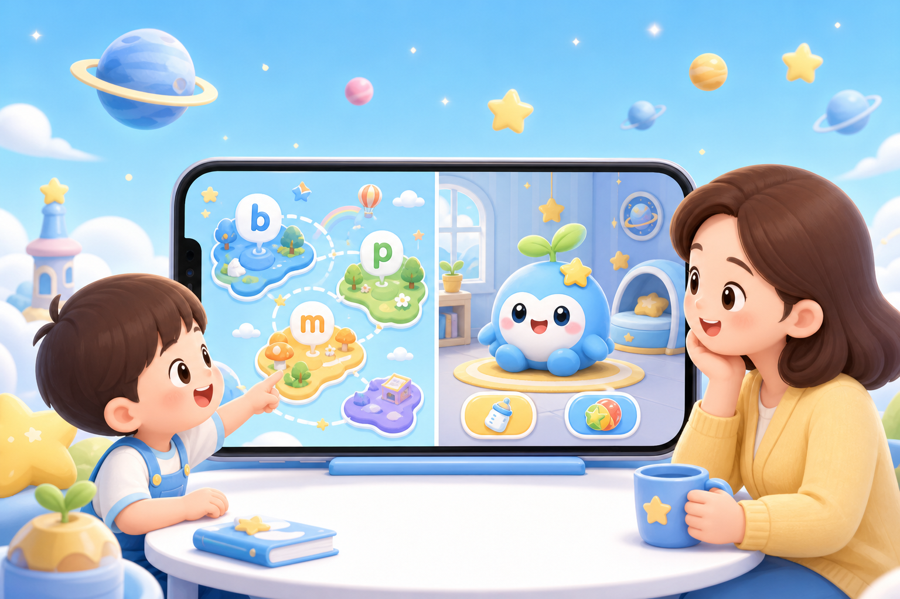

拼音星球 + 电子宠物使用说明：学完一关，回去喂芽芽


关注微信公众号 AI技趣星球，回复MF 一起用技术创造乐趣。
一句话结论：拼音过关赚积分 → 宠物小屋喂养玩耍 → 商店买装扮。下面按实际操作顺序写，分段动图在 ./images/demo-*.gif。
难度：⭐
怎么进入
- 打开小程序，到 学习星球 首页（地图页）
- 右上角 切换孩子（宠物、拼音进度、积分都跟着当前孩子走）
- 第一次用：进 孩子列表 建档案，勾选要用的模块（拼音、音标、字词、宠物）
中间模块区两个入口：

拼音星球（5 步）
地图选一项 → 单项学习 → 自由拼读 → 三题过关 → 回地图- 点 拼音拼读，在地图选一个未完成项（黄色 = 待学）
- 单项学习：听示范音，看口型提示和易混对比，点 去过关
- 自由拼读：选声母、韵母、声调；不能拼的组合会变灰
- 三题过关：听音选字母 → 选拼读示例 → 录音回放（录完即算完成）
- 过关后该项变绿；弹出 学习奖励 卡片，积分和经验自动入账
分类入口（声母 / 韵母 / 整体认读）在地图页，想直接找某个字母可以从那里进。

电子宠物
领养
- 首页点 电子宠物
- 输入名字（1～8 字，默认「芽芽」）
- 点 确认领养 · 获得 30 星星积分 → 进入宠物小屋
每个孩子单独一只；换孩子后，已领养的会直接进小屋，未领养的重新走领养。

宠物小屋
看状态
三个按钮
- 喂养 — 饱腹低于 90 才能点；每天第一次星星饼干免费
- 玩耍 — 需要足够活力（默认有弹弹球）
- 睡觉 — 活力低时可用，睡完活力回升
点宠物本身：随机小动作，不加积分。
右上角：装扮、商店。下方：今日任务、学习奖励、成长手册。

积分和经验从哪来
完成学习后自动入账，不用手动领：
过关页 / 听写结果页的奖励卡片：
- 去看看宠物 → 宠物小屋
- 继续学习 → 回到刚才模块
学习奖励 页（小屋下方入口）：
- 看当前 ★ 余额
- 对「待分享」项点 分享 领 +5 ★
- 看最近入账记录

今日任务
小屋 → 今日任务，每天 3 条：
- 完成 1 个音标或拼音关卡
- 完成 1 组字词听写（批改保存后算完成）
- 今天学满 2 个不同模块（如拼音 + 听写）
进度显示「完成 X / 3」。点未完成的行会跳到对应模块；已完成的不能再点。

星星商店
小屋右上角 → 商店 → 选分类（全部 / 食物 / 玩具 / 配饰）→ 点购买。
积分不够会提示还差多少；够了直接买。

装扮间
小屋右上角 → 装扮 → 选部位（头 / 颈 / 背 / 手）→ 点 穿戴。
- 卸下：摘掉当前部位
- 未拥有的：点 去购买 跳商店

成长手册
小屋 → 成长手册：看等级、称号、累计 XP、距下一级还差多少，以及各级里程碑。

一次走通（示例）
选孩子 → 拼音过关 1 项 → 奖励卡片点「去看看宠物」→ 喂养 → 玩耍 → 今日任务看进度有字词模块的话，再加一步听写批改，任务更容易凑满 3/3。
常见问题
换了孩子，宠物不见了？ 切回那个孩子；每个孩子独立，未领养的重新领养。
积分不够买吃的？ 继续学拼音 / 音标 / 听写；每天还有一次免费星星饼干可喂。
玩耍点不了？ 活力不够 → 先 睡觉 再玩。
喂养提示「已经吃得很饱啦」？ 饱腹 ≥ 90，等第二天或先去玩耍。
分享没加积分？ 该任务可能已领过，或今天 3 次分享用完了 → 去 学习奖励 页查记录。
关注微信公众号 AI技趣星球，回复MF 一起用技术创造乐趣。
有问题？评论区告诉我